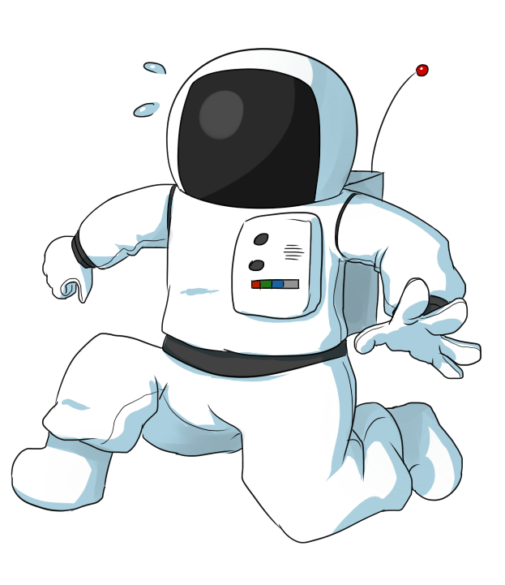
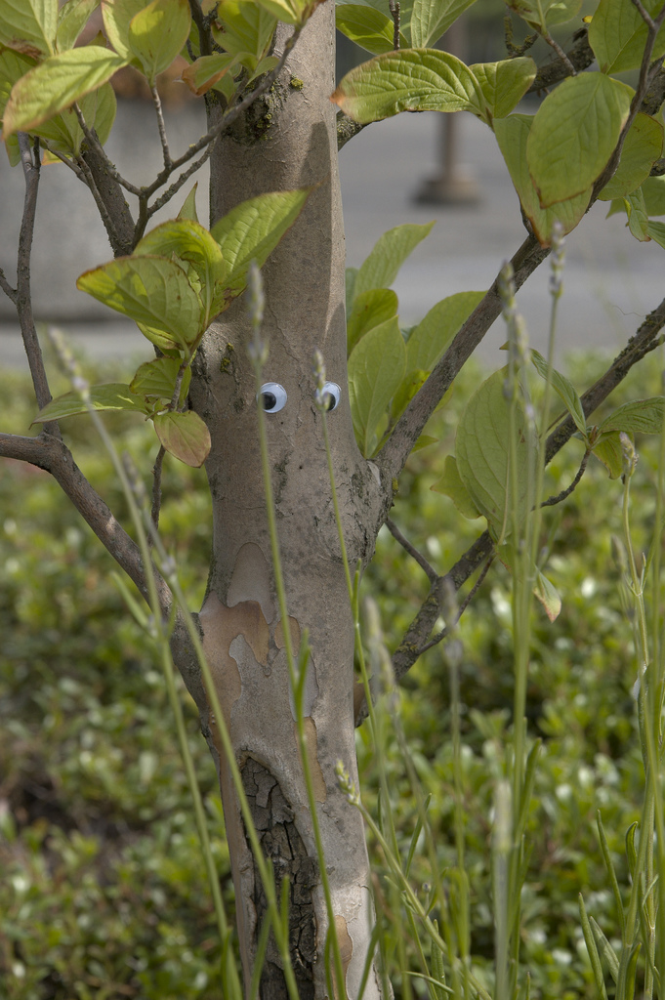

ORIGIN
Captain Olimar is from a planet far from ours. Its people are small, almost the size of a United States quarter. They are notoriously greedly, and their planet is one of merchants. Olimar, along with his friend Louie, work for a planetary shipping company. They grow and ship Pikpik carrots to various surrounding planets. One day, while Olimar is on vacation, voyaigng through the solar system, he crahs lands on a foreign planet; unbeknownst to him, this planet is ours, Earth. Due to his small size, being smaller than a battery, he struggles to survive. Even worse, oxygen to poisonous to him, and he only has 30 days worth of air left to live on; if he cannot repair his ship before then, he will die. Luckily, with the help of the Pikmin (read below), he barely escapes with his live, being able to brave the dangerous wild and restore his ship just before his air supply runs out.


SHIP
Olimar's beloved ship is the S.S. Dolphin, not to be confused with the seabound mammals of Earth. He uses it to complete shipments of Pikpik carrots and to explore on vacation. During his crash, the ship separates into numerous pieces, leaving him unable to escape. Only with the help of Pikmin is he able to restore the engine, allowing him to enter the atmosphere for a nights rest. In order to leave orbit and go home, he must get back together most of the 30 pieces, with the option to leave some behind. In some stories of the tell, he collects all 30, but in others, he leaves in a partially made ship only, leaving a chance for failure and uncomfort as he returns to his planet.
PIKMIN
Olimar's main asset on the planet is the plantoid lifeforms Pikmin. He first finds one planted on the ground, a leaf on its head, and plucks it by the stem. This Pikmin, which he names after his Pikpik carrots, follows his every order. He finds an "onion" nearby, which can take in nutrients to grow more Pikmin. After amassing a small army, he begins to travel around, fighting antagonistic wildlife and collecting more pieces of the S.S. Dolphin from nearby. Collecting more pieces allows him to fly to new regions, where he finds different varieties of Pikmin. Red Pikmin can withstand high temperatures, and have piercing attacks with their long "noses;" Yellow Pikmin can glide with their large "ears," withstand electrical shocks, and pick up volatile minerals to use against opponents; Blue Pikmin use "gills" to travel underwater, and their thick shell protects them from damage.
